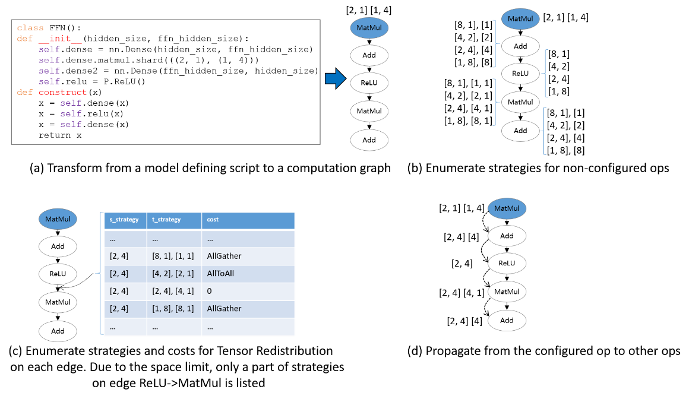

Sharding Strategy Propagation Algorithm

Overview
The sharding strategy propagation algorithm means that the user only needs to manually define the strategies for a few key operators, and the strategies for the rest of the operators in the computation graph are automatically generated by the algorithm. Because the strategies of the key operators have been defined, the cost model of the algorithm mainly describes the redistribution cost between operators, and the optimization objective is to minimize the cost of the whole graph redistribution. Because the main operator strategy has been defined, which is equivalent to compress the search space, the search time of this scheme is shorter, and its strategy performance relies on the definition of the key operator strategy, so it still requires the user to have some ability to analyze the definition strategy.
Hardware platforms supported by the sharding strategy propagation algorithm include Ascend, GPU, in addition to both PyNative mode and Graph mode.
Related interfaces:
mindspore.set_auto_parallel_context(parallel_mode=ParallelMode.AUTO_PARALLEL, search_mode="sharding_propagation"): Set the parallel mode to auto-parallel and the search mode to the sharding strategy propagation algorithm.mindspore.nn.Cell.shard()andmindspore.ops.Primitive.shard(): Specifies the operator sharding strategy, and the strategy for the rest of the operators is derived by the propagation algorithm. Currently themindspore.nn.Cell.shard()interface can only be used in PyNative mode; Themindspore.ops.Primitive.shard()interface can only be used in Graph mode.
In summary, the sharding strategy propagation algorithm requires the user to manually configure the sharding strategy of the key operator.
Basic Principles
Given a computation graph, Sharding Propagation is a functionality that propagates the Sharding Strategies from configured operator to the whole graph, with the goal of minimizing the communication cost in Tensor Redistribution.
The input of Sharding Propagation is a computation graph, in which nodes represent operators, and edges encode the data-dependency relationship of operators. From a model definition with some operators configured Sharding Strategies, Sharding Propagation executes as follows:
Generate possible Sharding Strategies for non-configured operators;
Generate Tensor Redistributions and the associated communication costs for each edge;
Start from the configured operators, and propagate the Sharding Strategies to non-configured operators using BFS, with the goal of minimizing the communication cost along each edge.
The following figure illustrates an example process of applying Sharding Propagation. Given an computation graph with some configured strategies, it first enumerates possible strategies for non-configured operators, as shown in figure (b). Next, it enumerates possible strategies and the Tensor Redistribution costs for each edge. Demonstrated in figure (c), the strategy for an edge is defined as a pair [s_strategy, t_strategy], where s_strategy and t_strategy denote Sharding Strategy for source operator and target operator, respectively. Finally, starting from the configured operator, it determines the next operator’s Sharding Strategy, such that the communication cost in Tensor Redistribution is minimized. The propagation ends when the Sharding Strategies for all operators are settled, as shown in figure (d).

Operation Practice
The following is an illustration of the sharding strategy propagation operation using an Ascend or GPU stand-alone 8-card example:
Sample Code Description
Download the complete sample code: sharding_propagation.
The directory structure is as follows:
└─ sample_code
├─ sharding_propagation
├── train.py
└── run.sh
...
train.py is the script that defines the network structure and the training process. run.sh is the execution script.
Configuring Distributed Environment
Specify the run mode, run device, run card number through the context interface. Unlike single card scripts, parallel scripts also need to specify the parallel mode parallel_mode as auto-parallel mode, the search mode search_mode as double recursive strategy, and initialize HCCL or NCCL communication through init. The device_target is automatically specified as the backend hardware device corresponding to the MindSpore package.
import mindspore as ms
from mindspore.communication import init
ms.set_context(mode=ms.GRAPH_MODE, save_graphs=2)
ms.set_auto_parallel_context(parallel_mode=ms.ParallelMode.AUTO_PARALLEL, search_mode="sharding_propagation")
init()
ms.set_seed(1)
Loading the Dataset
The dataset is loaded in the same way as that of the stand-alone, with the following code:
import os
import mindspore.dataset as ds
def create_dataset(batch_size):
dataset_path = os.getenv("DATA_PATH")
dataset = ds.MnistDataset(dataset_path)
image_transforms = [
ds.vision.Rescale(1.0 / 255.0, 0),
ds.vision.Normalize(mean=(0.1307,), std=(0.3081,)),
ds.vision.HWC2CHW()
]
label_transform = ds.transforms.TypeCast(ms.int32)
dataset = dataset.map(image_transforms, 'image')
dataset = dataset.map(label_transform, 'label')
dataset = dataset.batch(batch_size)
return dataset
data_set = create_dataset(32)
Defining the Network
The definition of the network is exemplified by the FeedForward Network (FFN), which is distinguished from a single cardinality network by the addition of the sharding strategy of the ops.MatMul() operator:
Currently only slicing the ops operator is supported in Graph mode.
import mindspore as ms
from mindspore import nn, ops
from mindspore.common.initializer import initializer
class Dense(nn.Cell):
def __init__(self, in_channels, out_channels):
super().__init__()
self.weight = ms.Parameter(initializer("normal", [in_channels, out_channels], ms.float32))
self.bias = ms.Parameter(initializer("normal", [out_channels], ms.float32))
# matmul i.e., the operator that is sliced
self.matmul = ops.MatMul()
self.add = ops.Add()
def construct(self, x):
x = self.matmul(x, self.weight)
x = self.add(x, self.bias)
return x
class FFN(nn.Cell):
def __init__(self):
super().__init__()
self.flatten = ops.Flatten()
self.dense1 = Dense(28*28, 64)
self.relu = ops.ReLU()
self.dense2 = Dense(64, 10)
def construct(self, x):
x = self.flatten(x)
x = self.dense1(x)
x = self.relu(x)
x = self.dense2(x)
return x
net = FFN()
# Configure the matmul operator sharding strategy in sense1 as ((2, 1), (1, 4))
net.dense1.matmul.shard(((2, 1), (1, 4)))
Training the Network
In this step, we need to define the loss function, the optimizer, and the training process, which is partially the same as that of the single card:
import mindspore as ms
from mindspore import nn
optimizer = nn.Momentum(net.trainable_params(), 1e-3, 0.1)
loss_fn = nn.CrossEntropyLoss()
def forward_fn(data, target):
logits = net(data)
loss = loss_fn(logits, target)
return loss, logits
grad_fn = ms.value_and_grad(forward_fn, None, net.trainable_params(), has_aux=True)
@ms.jit
def train_step(inputs, targets):
(loss_value, _), grads = grad_fn(inputs, targets)
optimizer(grads)
return loss_value
for epoch in range(10):
i = 0
for image, label in data_set:
loss_output = train_step(image, label)
if i % 100 == 0:
print("epoch: %s, step: %s, loss is %s" % (epoch, i, loss_output))
i += 1
Running a Stand-alone Eight-Card Script
Next, the corresponding scripts are invoked by commands, using the mpirun startup method and the 8-card distributed training script as an example of distributed training:
bash run.sh
After training, the log files are saved to the log_output directory. Set context: save_graphs=2 in train.py, and you can print out the IR graphs of the compilation process, where some of the file directories are structured as follows:
├─ log_output
| └─ 1
| ├─ rank.0
| | └─ stdout
| ├─ rank.1
| | └─ stdout
| ...
├─ rank_0
| ├─ step_parallel_begin_xxxx.ir
| ├─ xx_validate_xxx.ir
| ...
├─ rank_1
| ├─ step_parallel_begin_xxxx.ir
| ├─ xx_validate_xxx.ir
| ...
...
The part of Loss results are saved in log_output/1/rank.*/stdout, and the example is as follows:
epoch: 0, step: 0, loss is 2.3016691
epoch: 0, step: 100, loss is 2.2160375
epoch: 0, step: 200, loss is 1.7746857
epoch: 0, step: 300, loss is 1.0550221
epoch: 0, step: 400, loss is 0.763592
epoch: 0, step: 500, loss is 0.5714973
epoch: 0, step: 600, loss is 0.4949431
epoch: 0, step: 700, loss is 0.4682496
epoch: 0, step: 800, loss is 0.29194525
epoch: 0, step: 900, loss is 0.43532845
epoch: 0, step: 1000, loss is 0.46586612
...
In step_parallel_begin_xxxx.ir, you can see that each computational operator is configured with a sharding strategy:
...
%4(logits) = MatMul(%2, %3) {instance name: matmul} primitive_attrs: {input_names: [x1, x2], out_strategy: None, transpose_x2: Bool(0), transpose_b: Bool(0), in_strategy: ((2, 1), (1, 4)), output_names: [output], transpose_a: Bool(0), transpose_x1: Bool(0)} {in_strategy: ((2, 1), (1, 4))}
: (<Tensor[Float32], (256, 784)>, <Tensor[Float32], (784, 64)>) -> (<Tensor[Float32], (256, 64)>)
# Scope: (Default)
%5([CNode]1647) = Load($(@1_train_step.1349:para4_dense1.bias), %para16_u)
: (<Ref[Tensor[Float32]], (64), ref_key=:dense1.bias>, <UMonad, NoShape>) -> (<Tensor[Float32], (64)>)
# Scope: (Default)
%6(logits) = Add(%4, %5) {instance name: add} primitive_attrs: {output_names: [output], input_names: [x, y]} {in_strategy: ((2, 4), (4))}
: (<Tensor[Float32], (256, 64)>, <Tensor[Float32], (64)>) -> (<Tensor[Float32], (256, 64)>)
# Scope: (Default)
%7(logits) = ReLU(%6) {instance name: relu} primitive_attrs: {output_names: [output], input_names: [x]} {in_strategy: ((2, 4))}
: (<Tensor[Float32], (256, 64)>) -> (<Tensor[Float32], (256, 64)>)
# Scope: (Default)
%8([CNode]1641) = Load($(@1_train_step.1349:para5_dense2.weight), %para16_u)
: (<Ref[Tensor[Float32]], (64, 10), ref_key=:dense2.weight>, <UMonad, NoShape>) -> (<Tensor[Float32], (64, 10)>)
# Scope: (Default)
%9(logits) = MatMul(%7, %8) {instance name: matmul} primitive_attrs: {output_names: [output], transpose_a: Bool(0), input_names: [x1, x2], transpose_x2: Bool(0), transpose_x1: Bool(0), transpose_b: Bool(0)} {in_strategy: ((2, 4), (4, 1))}
: (<Tensor[Float32], (256, 64)>, <Tensor[Float32], (64, 10)>) -> (<Tensor[Float32], (256, 10)>)
# Scope: (Default)
...
For example, for the first MatMul operator, the input strategy in_strategy has been configured as ((2, 1), (1, 4)), and the sharding strategy of Add operator is configured as ((2, 4), (4)).
(<Tensor[Float32], (256, 784)>, <Tensor[Float32], (784, 64)>) -> (<Tensor[Float32], (256, 64)>)
represents the original input of the operator. For the first MatMul operator, the first and second input shapes are (256, 784), (784, 64) respectively and the output shape is (256, 64).
In xx_validate_xxx.ir, you can see that the input and output tensor of each operator is sliced:
...
%3(equiv[CNode]4) = MatMul(%1, %2) {instance name: matmul} primitive_attrs: {input_names: [x1, x2], out_strategy: None, transpose_x2: Bool(0), transpose_b: Bool(0), in_strategy: ((2, 1), (1, 4)), output_names: [output], transpose_a: Bool(0), transpose_x1: Bool(0)} cnode_attrs: {related_comm_node_id: "30707"} cnode_primal_attrs: {unique_id: "31021", related_fusion_key: "all_reduce_2-511848487187618470_1", related_node_id: "28192"} {in_strategy: ((2, 1), (1, 4))}
: (<Tensor[Float32], (128, 784)>, <Tensor[Float32], (784, 16)>) -> (<Tensor[Float32], (128, 16)>)
# Scope: (Default)
# In file train.py:40/ x = self.matmul(x, self.weight)/
%4(equiv[CNode]1647) = Load(%para4_dense1.bias, U) cnode_primal_attrs: {unique_id: "31025"}
: (<Ref[Tensor[Float32]], (16), ref_key=:dense1.bias>, <UMonad, NoShape>) -> (<Tensor[Float32], (16)>)
# Scope: (Default)
%5(equiv[CNode]4) = Add(%3, %4) primitive_attrs: {output_names: [output], input_names: [x, y]} cnode_attrs: {related_comm_node_id: "30709"} cnode_primal_attrs: {unique_id: "31020", related_fusion_key: "all_reduce_2-511848487187618470_1", related_node_id: "28190"} {in_strategy: ((2, 4), (4))}
: (<Tensor[Float32], (128, 16)>, <Tensor[Float32], (16)>) -> (<Tensor[Float32], (128, 16)>)
# Scope: (Default)
# In file train.py:41/ x = self.add(x, self.bias)/
%6(equiv[CNode]4) = ReLU(%5) {instance name: relu} primitive_attrs: {output_names: [output], input_names: [x]} cnode_primal_attrs: {unique_id: "31008"} {in_strategy: ((2, 4))}
: (<Tensor[Float32], (128, 16)>) -> (<Tensor[Float32], (128, 16)>)
# Scope: (Default)
# In file train.py:58/ x = self.relu(x)/
%7(equiv[CNode]1641) = Load(%para5_dense2.weight, U) cnode_primal_attrs: {unique_id: "31018"}
: (<Ref[Tensor[Float32]], (16, 10), ref_key=:dense2.weight>, <UMonad, NoShape>) -> (<Tensor[Float32], (16, 10)>)
# Scope: (Default)
%8(equiv[CNode]4) = MatMul(%6, %7) {instance name: matmul} primitive_attrs: {output_names: [output], transpose_a: Bool(0), input_names: [x1, x2], transpose_x2: Bool(0), transpose_x1: Bool(0), transpose_b: Bool(0)} cnode_attrs: {related_comm_node_id: "30724"} cnode_primal_attrs: {unique_id: "31015", related_fusion_key: "all_reduce_2-511848487187618470_1", related_node_id: "28180"} {in_strategy: ((2, 4), (4, 1))}
: (<Tensor[Float32], (128, 16)>, <Tensor[Float32], (16, 10)>) -> (<Tensor[Float32], (128, 10)>)
# Scope: (Default)
# In file train.py:40/ x = self.matmul(x, self.weight)/
...
For the first MatMul operator, after its inputs are sliced according to the strategy ((2, 1), (1, 4)), the shapes of the first and second inputs are sliced into (128, 784), (784, 16) from the original (256, 784), (784, 64), respectively, and thus the output shape of (128, 16) is obtained.
Other startup methods such as dynamic networking and rank table startup can be found in startup methods.
Empirical Principles on Configuring Sharding Strategies
Given a new model with numerous operators, from the user’s perspective, a key problem is to determine which operators should be configured, with what sharding strategies. Since the goal of Sharding Propagation is to minimize Tensor Redistribution cost, instead of finding the global minima of end-to-end step time, it is crucial to configure proper sharding strategies for “key operators”. There is no compulsory standard specifying which operators must be configured. However, based on our experience of training large models, there are indeed some principles guiding users to annotate shardings. We have summarized 3 empirical principles for reference, as detailed in Split Technique.